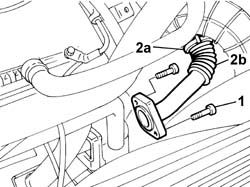
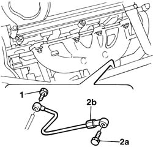
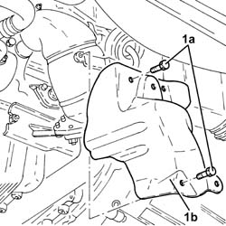
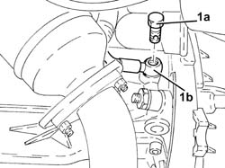
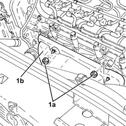
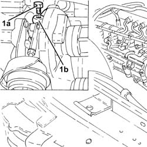
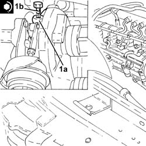
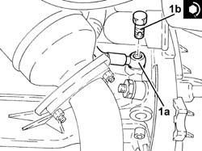

1084B40 engine oil delivery pipe to turbocharger - r + r
- Path
- Procedures > 10 ENGINE > 1084 ENGINE LUBRICATION SYSTEM > 1084B engine oil lubrication circuit > 1084B40 engine oil delivery pipe to turbocharger - r + r
- Kind
- repair procedure (removal / refitting; the operation number is the code)
- Applies to
- engines: 1.9 JTD 8V, 1.9 JTD 16V; all production periods
- Interactive page
- https://sloeber94.github.io/elrnDB-a147/en/#/3025072
Applies to: engines: 1.9 JTD 8V; all production periods
 Removing
Removing
 Refitting
Refitting1072C44 exhaust manifold heat shield on bulkhead - r+r
1. Unscrew the retaining bolts
2. Open collar (2a) and remove the rigid pipe carrying exhaust gas to the EGR (2b).

Applies to: engines: 1.9 JTD 8V; all production periods
1. Undo connector and disconnect engine oil supply pipe to the turbocharger, turbocharger side.
Raise the vehicle.
2. Undo connector (2a) and remove engine oil supply pipe to the turbocharger (2b).

Applies to: engines: 1.9 JTD 8V; all production periods
Refitting
RemovingFit the engine oil supply pipe to the turbocharger and fix it to the crankcase tightening the connector to the recommended torque.
Lower the vehicle.
Connect the engine oil supply pipe to the turbocharger and secure it by tightening the connector to the specified torque.
Fit the rigid pipe carrying exhaust gas to the EGR and tighten the bolts securing it to the exhaust manfold.
Applies to: engines: 1.9 JTD 16V; all production periods
Removing
RefittingPosition the vehicle on the ramp.
Proceed with removal 1016A10 sound-proofing cover - r + r .
Proceed with removal 7055B54 under-engine guard - r r .
1. Undo the bolts (1a) and remove the exhaust manifold heat shield (1b).

Applies to: engines: 1.9 JTD 16V; all production periods
1. Undo the connector (1a) and disconnect engine oil supply pipe to the turbocharger (1b), crankcase side.

Applies to: engines: 1.9 JTD 16V; all production periods
Proceed with removal 1088D24 rigid pipe for coolant inlet to water pump - r + r .
1. Undo the nuts (1a) and remove the upper exhaust manifold heat shield (1b).

Applies to: engines: 1.9 JTD 16V; all production periods
1. Undo the connector (1a) and disconnect the engine oil supply pipe to the turbocharger (1b), turbocharger side and remove it.

Applies to: engines: 1.9 JTD 16V; all production periods
Refitting
Removing1. Place the engine oil supply pipe to the turbocharger (1a) back in its housing, connect it to the turbocharger and secure it by tightening the connector (1b) to the recommended torque.
 | Fastening | Component | Ø | Value (daNm) |
|---|---|---|---|---|
1b | - | - | - | - |

Applies to: engines: 1.9 JTD 16V; all production periods
Place the upper exhaust manifold heat shield back in its housing and fix it using the nuts.
Proceed with refitting 1088D24 rigid pipe for coolant inlet to water pump - r + r .
1. Connect the engine oil delivery pipe to the turbocharger (1a), crankcase side, and tighten the connector (1b) to the recommended torque.
| Fastening | Component | Ø | Value (daNm) |
|---|---|---|---|---|
1b | Connector | OIL DELIVERY PIPE TO TURBO | M12 | (Engine crankcase side) 1.4 ÷ 1.7 |

Applies to: engines: 1.9 JTD 16V; all production periods
Place the lower exhaust manifold heat shield back in its housing and fix it using the bolts.
Refill the engine cooling system with coolant 0010T20 coolant change .
Proceed with refitting 7055B54 under-engine guard - r r .
Proceed with refitting 1016A10 sound-proofing cover - r + r .
Remove the car from the ramps.